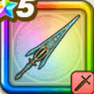

クロノスソード
攻略班 9.5点 / 会心必中のかまえ・刻クロノフォース時もどしの刃いきなりクロノフォースいきなり時間停止高揚の秒針成長の分針持続の時針運命の刻
くわしい特徴
【レベル別習得スキル】 Lv1【バトマス】攻撃力+5 Lv1【スパスタ】すばやさ+10 Lv1【二刀】二刀流時の斬撃・体技によるダメージ+5% Lv10会心必中のかまえ・刻（消費MP：最大MPの10%）攻撃力を上げ次のターンの斬撃・体技が会心の一撃になりガードやみかわしされず、攻撃対象の一部の良い効果を5ターン進める(戦闘中1回のみ) Lv20クロノフォース（消費MP：15）メラ・ヒャド・デインのフォースを得る。3つの属性の耐性を上げ、一部の攻撃に敵ごとに有効な属性を付加する(戦闘中1回のみ使用可能) Lv30時もどしの刃（消費MP：61）敵全体に700％さらにランダムな敵に4回200％のフォース強化の斬撃ダメージを与え、たまに敵のレベルを戦闘中のみ3回1レベル下げる Lv35悪魔系へのダメージ+5% Lv40マシン系へのダメージ+5% Lv45攻撃力+12 Lv50いきなりクロノフォース（消費MP：10）戦闘開始時にメラ・ヒャド・デインのフォースを得る。3つの属性の耐性を上げ、一部の攻撃に敵ごとに有効な属性を付加する(効果4ターン) Lv50いきなり時間停止（消費MP：5）戦闘開始時にランダムな敵1体に1ターンの休みを付与する。ごくまれに耐性を無視して1ターンの休みを付与する Lv50高揚の秒針（消費MP：最大MPの1%）毎ターン行動開始時にMPを消費し、自身のテンションを確率で1段階上げる(カウントが0になった時発動) Lv50成長の分針（消費MP：最大MPの5%）2ターンに1回行動開始時にMPを消費し、自身のレベルを戦闘中のみ3上げる(カウントが0になった時発動) Lv50持続の時針（消費MP：最大MPの3%）3ターンに1回行動開始時にMPを消費し、自身と両隣の味方の良い効果を1ターン延長する(カウントが0になった時発動) Lv50運命の刻（消費MP：最大MPの10%）全ての針が同時に0になる時自身のレベルを戦闘中のみ6上げクロノフォースを付与し、限界突破し攻撃力とスキルダメージと会心ダメージを強化 【限界突破スキル】 1凸スキルの斬撃・体技ダメージ+7% 2凸スキルの斬撃・体技ダメージ+7% 3凸スキルの斬撃・体技ダメージ+7% 4凸スキルの斬撃・体技ダメージ+7%